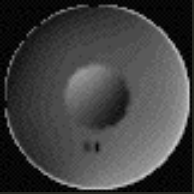

Music
The Ballad of Luigi
Mashups
Miscellaneous
Music for Podcasts
Music for Griven
Music for Rebecca's Animations
Old Piano Songs
Chords & Lyrics
Drew's Blues: A Rock Operettta
Songs
Albums
Art
Paintings
Drawings
Photography
UW Daily Illustrations
Life of Pika Illustrations
Dead End Test Renders
Miscellaneous
Games
Data Corp Inc.
Tetriven
Nabanagrams
Game of Cards
Chord Wheel
Automata
Point & Clicks
Catan-o-Rama!
Soviet Monopoly
Cirque de Sabotage
MXBBI
Drop
Griven
Grounded (Scratch Version)
Grounded (Fancy Version)
Writing
Miscellaneous
LinkedIn
Either
Palindromes
Alphabet Sayings
Miscellaneous
College
Christian Bök
You're Little
ABBA CD
TheRaven.java
Nature Forging a Baby
High School
Poetry Portfolio
Acrostic
Great Apes
ABBA
Ough
iGod and Cleverbot
Murder of Haiku
Writer's Block
I Am Dumb Poem
Chemistry
Free Verse, 20 Lines Minimum
Sack Lunch
The Pencil Story
Fruit Flies
By the Waters of Babylon: The Reawakening
Mr. Oates
Middle School
Shakespearean Friday
Ms. Knottethin
The Church
Zirconium
Ode to Oden
Life of Bob
How to Write a How-To Essay
The 'Lewis Carroll Poem' Poem
Mystery Object Poem
Newport Field Trip Haikus
Planet Limericks
Da Vinci Code Poem
Elementary School
The Flagellants
The Adventures of George W. Bush
John Adams Poem
Video
All Videos
Music Videos
Live Action
Animation
Miscellaneous